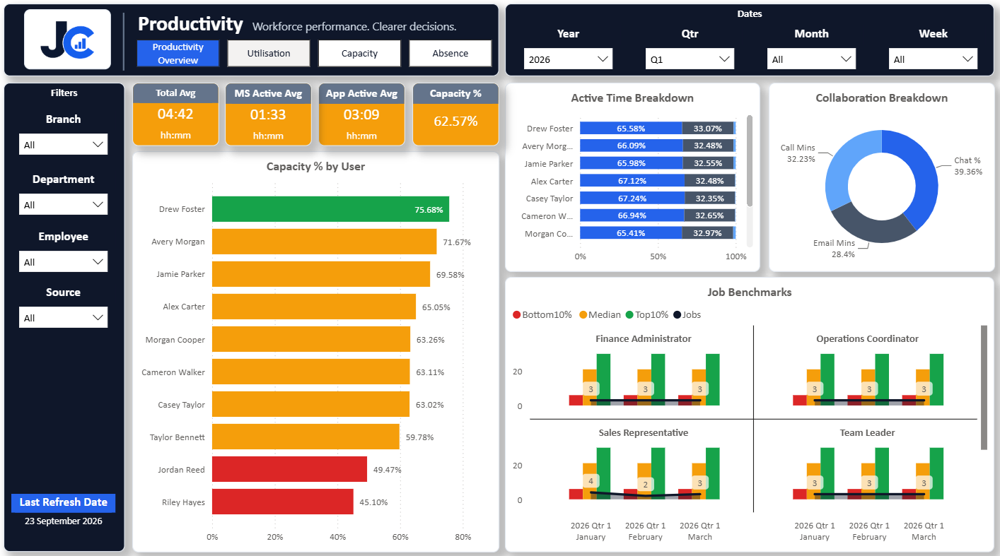
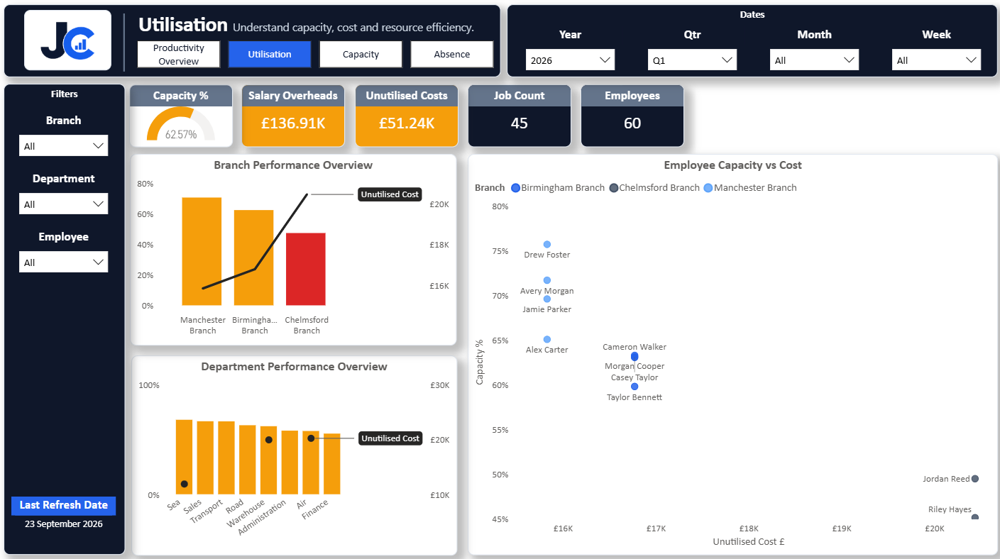
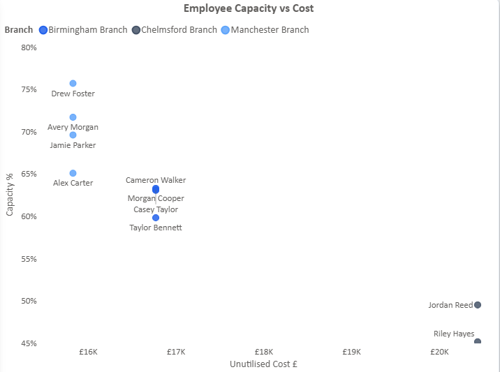
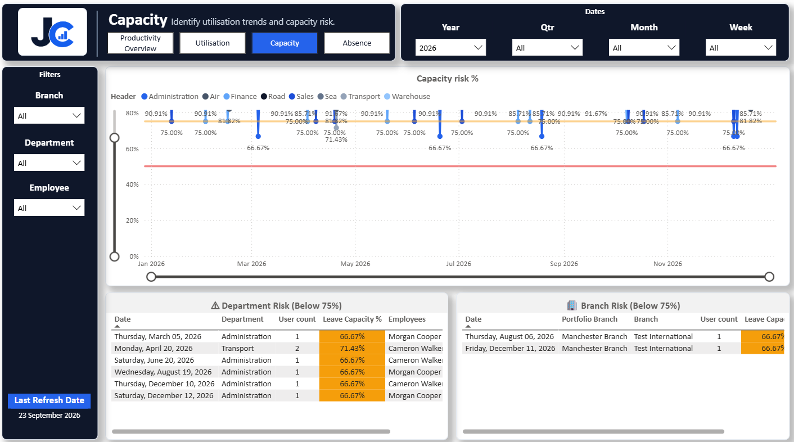
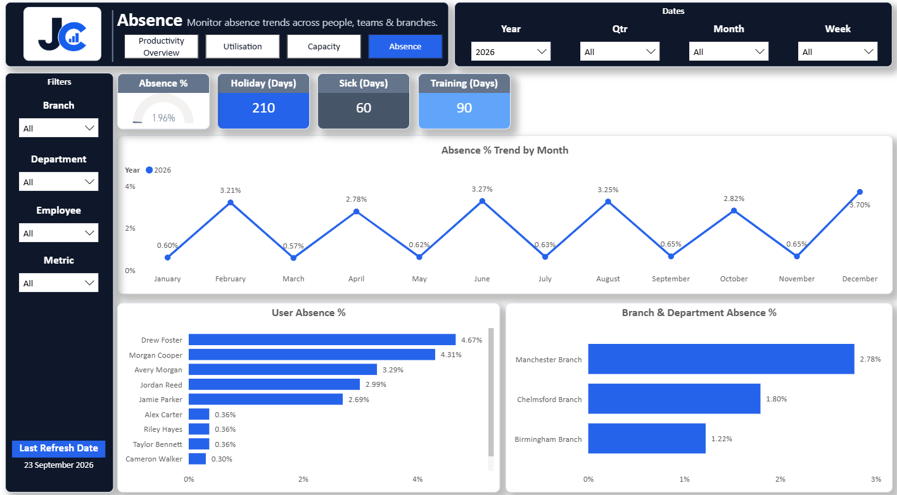

Productivity & Capacity Dashboard
Workforce productivity, capacity and resource utilisation in one report
This project uses synthetic data created for portfolio purposes. No customer, employee or commercially sensitive business data is included.
Overview
I built this report to give managers a clearer view of productivity across the business while bringing together capacity, absence and employee cost.
The aim was to identify spare resource, understand differences across branches and departments, estimate the cost of underutilised capacity and highlight where upcoming absence could reduce available resource.
The Challenge
Looking at productivity percentages alone does not always give enough context. The more useful question is what lower utilisation means for the wider business and whether available resource could be used more effectively.
Productivity Overview

Capacity % compares active time with contracted working minutes and can be analysed by employee, department or branch.
Capacity % =
DIVIDE(
SUM(ActivityMerged[Total Active]),
SUM(ActivityMerged[Contract Mins]),
0)Traffic Light System
Capacity Colour =
SWITCH(
TRUE(),
[Capacity %] < 0.5, "#DC2626",
[Capacity %] < 0.75, "#F59E0B",
"#16A34A")Red is below 50%, Amber is 50% to below 75%, and Green is 75% and above. Blue remains the standard reporting colour while traffic-light colours are used only where values are evaluated against thresholds.
Cost Utilisation

The Cost Utilisation page applies unused capacity to salary cost, adding financial context to the productivity analysis.
Salaries =
CALCULATE(
SUM('aggregate'[PeriodAmount]),
glcodes[ReportSection] = "Overheads",
glcodes[GlCodeGrouped] = "Salaries")Unutilised % =
1 - [Capacity %]
Unutilised Cost =
[Salaries] * [Unutilised %]If one branch is operating at lower utilisation while carrying a similar salary cost, managers can investigate whether existing resource could be used more effectively before considering additional resource elsewhere.
Branch Comparison

Grouping the employees by branch makes it easy to compare capacity across the business. In this example, Chelmsford is operating at a much lower capacity than Birmingham and Manchester, which also helps highlight the cost of that unused capacity.
Workforce Capacity Planning

This page looks forward by using planned leave to show how much workforce resource will be available. If several employees from one department are away during the same period, managers can review workload, cover and resource allocation before capacity drops.
Absence % =
DIVIDE(
SUM(EmployeeLeave[Duration _Days_]),
[Avaliable working days],
0)Absence Analysis

Dedicated absence pages provide more context when the Capacity page identifies a period of reduced workforce availability, linking historic absence analysis with forward-looking planning.
Data & Model
The report combines employee information, branches, departments, activity data, contracted working time, salary and overhead data, employee absence and date-based reporting.
Synthetic data is used to demonstrate the reporting approach without exposing real employee or sensitive information.
Business Value
Productivity shows how working time is being utilised. Cost Utilisation adds financial context. Capacity looks ahead at the effect of planned leave, while Absence provides supporting detail.
Tools & Skills
Power BI · DAX · Power Query · Data Modelling · Data Visualisation · Conditional Formatting · Workforce Analytics · Capacity Planning